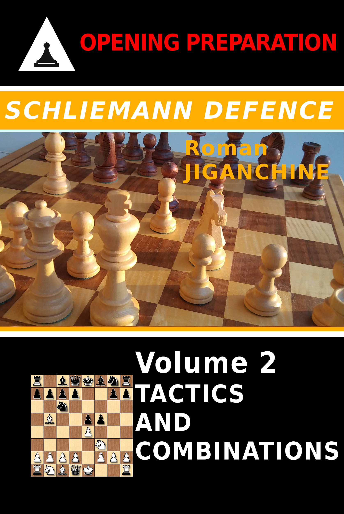

Schliemann Defence - Tactics and Combinations
Created Sunday 14 January 2018
Amazon | Google Play | Paperback
Schliemann Defence is known as the Jaenisch Gambit especially in Russian literature, because it is considered that Carl Jaenisch was the first chess player to seriously analyze this response to 3.Bb5. It is an excellent practical choice for a chess player, because it leads to a rather special set of positions, that are not very familiar to most players on the White side, so an expert Black Schliemann player will often get to show off his or her better understanding of pawn structures and piece maneuver common to this variation, making it possible to take over the initiative and play for a win in every game. Today many strong chess players occasionally play it, with Teimour Radjabov being one of the main proponents. Levon Aronian has also tried it a few times, and other top players who have it in their repertoire include Vadim Zvjaginsev, Alexander Khalifman, Ivan Sokolov and Liviu Dieter Nisipeanu. Magnus Carlsen himself tried it on a couple of occasions. Among the players who played it in the previous decades, one can name Ventzislav Inkiov and Ratmir Kholmov.
This is a second volume on the Schliemann; the first book Schliemann Defence: Volume 1 - Theory and Practice covers the theoretical lines and practical examples. This book, the second volume - focuses on the tactical aspects of the Schliemann, and most of the games are selected to fit within the repertoire or pawn structures suggested in the first volume. The book contains over 100 combinations and for each game, the reader will be able to both solve the critical position, as well as replay through the entire game if they are interested, as the full game text is also provided. Most of the tactics here come from the Black side, although there are a few positions that need to be solved for White, so beware of those too.

How to Learn Typical Tactics - Follow up Book
In order to play any chess opening well, one has to get a sense of typical patterns in the variations that one intends to adopt. This can be done roughly by following these steps:
- • find the common pawn structures
- focus on games of players who frequently play this line (see the player index at the end of the book)
- study their combinations and find the common patterns
Interestingly, the games don't have to even come from very strong players. In fact, soon you can become that player as your own games will be full of these tactical shots! This follow up volume with over a hundred tactical positions should allow you to practice tactics typical for the Schliemann defence.
Upon studying the two volumes on it and adopting the Schliemann, you will discover that playing this line has the following benefits:
- Black enforces his variation on White as early as the third move, and thus takes most of the theoretical battles to his own "home turf"
- Black himself has to sharpen up his playing instincts from the very early stage of the game and play as concrete moves as possible, because theory tends to not go very far in the Schliemann; it is rare to be blitzing out theoretical lines anywhere past move 10, if not move 5
- The nature of arising positions, where Black most often has a strong center and/or two bishops - allows a player to develop a good sense of initiative if he or she does not have one already
- The same applies in positions where Black gambits a pawn and plays for compensation, either in the middlegame or in the endgame
- If one has not played similar risky sharp openings before, and/or has discarded gambits like the Schliemann as too positionally unsound - playing it will expand their positional horizons and broaden understanding of chess in general